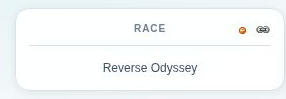
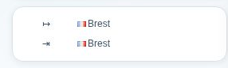
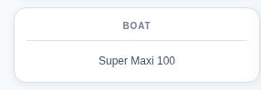
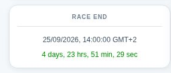
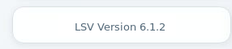

Polars Chart
Left Hand Side Panels
Race Name

This panel contains the full name of the selected race.
It also contains contextual action buttons:
Archive this race
Moves the race into the Races archived.
Available only for races in progress.
 Restore this race
Restore this race
Moves the race into main list.
Available only for races still in progress which were previously archived.
Get Permalink
Transforms the Page URL in the address bar to reveal permalink.
Route

This panel shows the starting and ending points of the race.
The GPS coordinates are gathered from the race setup sent by Virtual Regatta™.
Also, no intermediate gates/buoys are displayed here.
This is why, on races where starting and ending in the same place, the display may be dull.
Boat Type

This panel shows the type of the boat used in this race.
Each boat have specific performances profiles.
This includes intrinsic polars charts, sails and options sets, which may vary from one boat to another.
Providing the boat type here is only informative, but useful for those willing to use an
external router, and use proper polar data.
In this regard, you might want to use the dedicated CSV Generator application.
Countdown

This panel shows the time remaining to the incoming event on the race selected.
When a race is not yet started, the start time is displayed and the countdown updates every second until the start time is reached.
Incoming races are colored in "blue", according to the color code used in the Race Selector.

When a race is in progress, the countdown shows the end time, and the counts only the amount of days remaining until the race closes.
Races in progress are colored in "green" (in progress) or "dark red" (about to close within 2 days).
A closed race has no countdown anymore, which is replaced by the message "No information to display right now".
Version

This panel shows the running LSV version and links to the release notes.